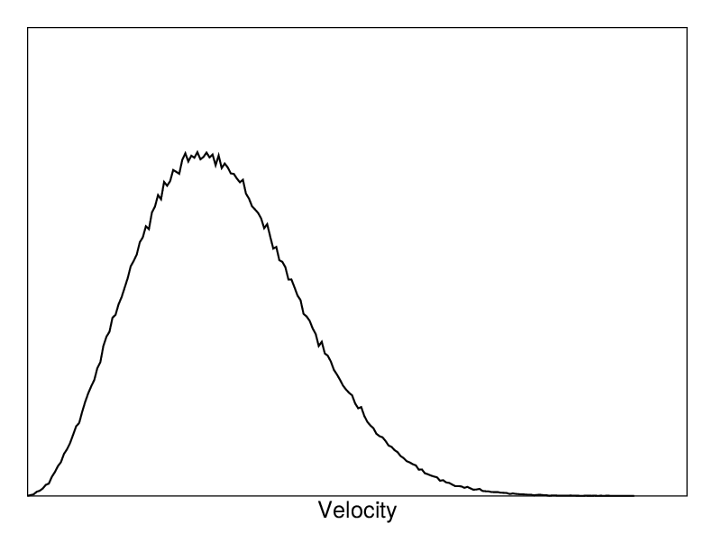
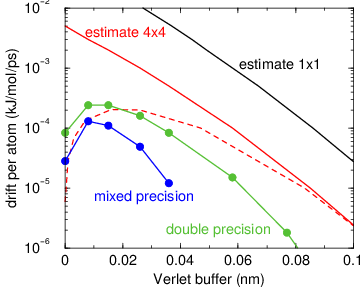
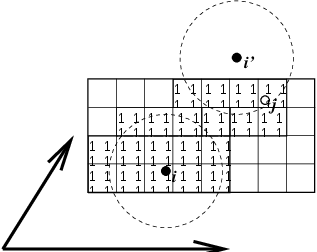
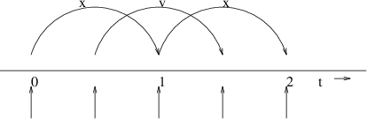

Molecular Dynamics¶
THE GLOBAL MD ALGORITHM
A global flow scheme for MD is given above. Each MD or EM run requires as input a set of initial coordinates and – optionally – initial velocities of all particles involved. This chapter does not describe how these are obtained; for the setup of an actual MD run check the User guide in Sections System preparation and Getting started.
Initial conditions¶
Topology and force field¶
The system topology, including a description of the force field, must be read in. Force fields and topologies are described in chapter Interaction function and force fields and top, respectively. All this information is static; it is never modified during the run.
Coordinates and velocities¶


Fig. 4 A Maxwell-Boltzmann velocity distribution, generated from random numbers.¶
Then, before a run starts, the box size and the coordinates and velocities of all particles are required. The box size and shape is determined by three vectors (nine numbers) \(\mathbf{b}_1, \mathbf{b}_2, \mathbf{b}_3\), which represent the three basis vectors of the periodic box.
If the run starts at \(t=t_0\), the coordinates at \(t=t_0\) must be known. The leap-frog algorithm, the default algorithm used to update the time step with \({{\Delta t}}\) (see The leap-frog integrator), also requires that the velocities at \(t=t_0 - {{\frac{1}{2}}{{\Delta t}}}\) are known. If velocities are not available, the program can generate initial atomic velocities \(v_i, i=1\ldots 3N\) with a Maxwell-Boltzmann distribution (Fig. 4) at a given absolute temperature \(T\):
where \(k\) is Boltzmann’s constant (see chapter Definitions and Units). To accomplish this, normally distributed random numbers are generated by adding twelve random numbers \(R_k\) in the range \(0 \le R_k < 1\) and subtracting 6.0 from their sum. The result is then multiplied by the standard deviation of the velocity distribution \(\sqrt{kT/m_i}\). Since the resulting total energy will not correspond exactly to the required temperature \(T\), a correction is made: first the center-of-mass motion is removed and then all velocities are scaled so that the total energy corresponds exactly to \(T\) (see (23)).
Center-of-mass motion¶
The center-of-mass velocity is normally set to zero at every step; there is (usually) no net external force acting on the system and the center-of-mass velocity should remain constant. In practice, however, the update algorithm introduces a very slow change in the center-of-mass velocity, and therefore in the total kinetic energy of the system – especially when temperature coupling is used. If such changes are not quenched, an appreciable center-of-mass motion can develop in long runs, and the temperature will be significantly misinterpreted. Something similar may happen due to overall rotational motion, but only when an isolated cluster is simulated. In periodic systems with filled boxes, the overall rotational motion is coupled to other degrees of freedom and does not cause such problems.
Neighbor searching¶
As mentioned in chapter Interaction function and force fields, internal forces are either generated from fixed (static) lists, or from dynamic lists. The latter consist of non-bonded interactions between any pair of particles. When calculating the non-bonded forces, it is convenient to have all particles in a rectangular box. As shown in Fig. 1, it is possible to transform a triclinic box into a rectangular box. The output coordinates are always in a rectangular box, even when a dodecahedron or triclinic box was used for the simulation. (10) ensures that we can reset particles in a rectangular box by first shifting them with box vector \({\bf c}\), then with \({\bf b}\) and finally with \({\bf a}\). Equations (12), (13) and (14) ensure that we can find the 14 nearest triclinic images within a linear combination that does not involve multiples of box vectors.
Pair lists generation¶
The non-bonded pair forces need to be calculated only for those pairs
\(i,j\) for which the distance \(r_{ij}\) between \(i\) and
the nearest image of \(j\) is less than a given cut-off radius
\(R_c\). Some of the particle pairs that fulfill this criterion are
excluded, when their interaction is already fully accounted for by
bonded interactions. But for most electrostatic treatments, correction
forces also need to be computed for such excluded atom pairs.
GROMACS employs a pair list that contains those
particle pairs for which non-bonded forces must be calculated. The pair
list contains particles \(i\), a displacement vector for particle
\(i\), and all particles \(j\) that are within rlist of this
particular image of particle \(i\). The list is updated every
nstlist steps.
To make the pair list, all atom pairs that are within the pair-list cut-off distance need to be found and stored in a list. Note that such a list generally does not store all neighbors for each atom, since each atom pair should appear only once in the list. This searching, usually called neighbor search (NS) or pair search, involves periodic boundary conditions and determining the image (see sec. Periodic boundary conditions). The search algorithm employed in GROMACS is \(O(N)\).
As pair searching is an expensive operation, a generated pair list is retained for a certain number of integration steps. A buffer is needed to account for relative displacements of atoms over the steps where a fixed pair list is retained. GROMACS uses a buffered pair list by default. It also uses clusters of particles, but these are not static as in the old charge group scheme. Rather, the clusters are defined spatially and consist of 4 or 8 particles, which is convenient for streaming-style computing on parallel hardware in CPUs and GPUs. At neighbor search steps, a pair list is created with a Verlet buffer, i.e. the pair-list cut-off is larger than the interaction cut-off. In the non-bonded kernels, interactions are only computed when a particle pair is within the cut-off distance at that particular time step. This ensures that as particles move between pair search steps, forces between nearly all particles within the cut-off distance are calculated. We say nearly all particles, because GROMACS uses a fixed pair-list update frequency for efficiency. A particle-pair, whose distance was outside the cut-off, could possibly move enough during this fixed number of steps that its distance is now within the cut-off. This small chance results in a small energy drift, and the size of the chance depends on the temperature. When temperature coupling is used, the buffer size can be determined automatically, given a certain tolerance on the energy drift. The default tolerance is 0.005 kJ/mol/ps per particle, but in practice the energy drift is usually an order of magnitude smaller. Note that in single precision for normal atomistic simulations constraints cause a drift somewhere around 0.0001 kJ/mol/ps per particle, so it does not make sense to go much lower than that.
The pair list is implemented in a very efficient fashion based on clusters of particles. The simplest example is a cluster size of 4 particles. The pair list is then constructed based on cluster pairs. The cluster-pair search is much faster searching based on particle pairs, because \(4 \times 4 = 16\) particle pairs are put in the list at once. The non-bonded force calculation kernel can then calculate many particle-pair interactions at once, which maps nicely to SIMD or SIMT units on modern hardware, which can perform multiple floating operations at once. These non-bonded kernels are much faster than the kernels used in the group scheme for most types of systems, particularly on newer hardware. For further information on algorithmic and implementation details of the Verlet cut-off scheme and the NxM kernels, as well as detailed performance analysis, please consult the following article: 182.
Additionally, when the list buffer is determined automatically as described below, we also apply dynamic pair list pruning. The pair list can be constructed infrequently, but that can lead to a lot of pairs in the list that are outside the cut-off range for all or most of the life time of this pair list. Such pairs can be pruned out by applying a cluster-pair kernel that only determines which clusters are in range. Because of the way the non-bonded data is regularized in GROMACS, this kernel is an order of magnitude faster than the search and the interaction kernel. On the GPU this pruning can be overlapped with the integration on the CPU, so it is free in some cases. Therefore we can prune every 4-10 integration steps with little overhead and significantly reduce the number of cluster pairs in the interaction kernel. This procedure is applied automatically, unless the user set the pair-list buffer size manually.
Energy drift and pair list buffering¶
For a canonical (NVT) ensemble, the average energy error caused by diffusion of \(j\) particles from outside the pair-list cut-off \(r_\ell\) to inside the interaction cut-off \(r_c\) over the lifetime of the list can be determined from the atomic displacements and the shape of the potential at the cut-off. The displacement distribution along one dimension for a freely moving particle with mass \(m\) over time \(t\) at temperature \(T\) is a Gaussian \(G(x)\) of zero mean and variance \(\sigma^2 = t^2 k_B T/m\). For the distance between two particles, the variance changes to \(\sigma^2 = \sigma_{12}^2 = t^2 k_B T(1/m_1+1/m_2)\). Note that in practice particles usually interact with (bump into) other particles over time \(t\) and therefore the real displacement distribution is much narrower. Given a non-bonded interaction cut-off distance of \(r_c\) and a pair-list cut-off \(r_\ell=r_c+r_b\) for the Verlet buffer size \(r_b\), we can then write the average energy error after time \(t\) for all missing pair interactions between a single \(i\) particle of type 1 surrounded by all \(j\) particles that are of type 2 with number density \(\rho_2\), when the inter-particle distance changes from \(r_0\) to \(r_t\), as:
To evaluate this analytically, we need to make some approximations. First we replace \(V(r_t)\) by a Taylor expansion around \(r_c\), then we can move the lower bound of the integral over \(r_0\) to \(-\infty\) which will simplify the result:
Replacing the factor \(r_0^2\) by \((r_\ell + \sigma)^2\), which results in a slight overestimate, allows us to calculate the integrals analytically:
where \(G(x)\) is a Gaussian distribution with 0 mean and unit variance and \(E(x)=\frac{1}{2}\mathrm{erfc}(x/\sqrt{2})\). Note the potential at the cut-off, \(V(r_c)\), is zero by definition. But the same formula can be used to estimate errors in the pressure and then the force is used for \(V\) in these formulas and this leading term will generally not be zero. We always want to achieve small energy error, so \(\sigma\) will be small compared to both \(r_c\) and \(r_\ell\), thus the approximations in the equations above are good, since the Gaussian distribution decays rapidly. The energy error needs to be averaged over all particle pair types and weighted with the particle counts. In GROMACS we do not allow cancellation of error between pair types, so we average the absolute values. To obtain the average energy error per unit time, it needs to be divided by the neighbor-list life time \(t = ({\tt nstlist} - 1)\times{\tt dt}\). The function can not be inverted analytically, so we use bisection to obtain the buffer size \(r_b\) for a target drift. Again we note that in practice the error we usually be much smaller than this estimate, as in the condensed phase particle displacements will be much smaller than for freely moving particles, which is the assumption used here.
For inhomogeneous systems, using the global atom densities \(\rho\) can lead to an underestimate of the energy drift. To avoid that, an effective density is used. This is computed by putting all atoms on a grid where the cells are approximately the size of the cut-off. The densities are then averaged over the cells weighted by the density of each cell. This provides accurate estimates for inhomogeneous systems, e.g. the effective density for a molecule or a droplet in an otherwise empty box does not depend on the size of the box.
When (bond) constraints are present, some particles will have fewer degrees of freedom. This will reduce the energy errors. For simplicity, we only consider one constraint per particle, the heaviest particle in case a particle is involved in multiple constraints. This simplification overestimates the displacement. The motion of a constrained particle is a superposition of the 3D motion of the center of mass of both particles and a 2D rotation around the center of mass. The displacement in an arbitrary direction of a particle with 2 degrees of freedom is not Gaussian, but rather follows the complementary error function:
where \(\sigma^2\) is again \(t^2 k_B T/m\). This distribution can no longer be integrated analytically to obtain the energy error. But we can generate a tight upper bound using a scaled and shifted Gaussian distribution (not shown). This Gaussian distribution can then be used to calculate the energy error as described above. The rotation displacement around the center of mass can not be more than the length of the arm. To take this into account, we scale \(\sigma\) in (20) (details not presented here) to obtain an overestimate of the real displacement. This latter effect significantly reduces the buffer size for longer neighborlist lifetimes in e.g. water, as constrained hydrogens are by far the fastest particles, but they can not move further than 0.1 nm from the heavy atom they are connected to.
There is one important implementation detail that reduces the energy errors caused by the finite Verlet buffer list size. The derivation above assumes a particle pair list. However, the GROMACS implementation uses a cluster pair list for efficiency. The pair list consists of pairs of clusters of 4 particles in most cases, also called a \(4 \times 4\) list, but the list can also be \(4 \times 8\) (GPU CUDA kernels and AVX 256-bit single precision kernels) or \(4 \times 2\) (SSE double-precision kernels). This means that the pair list is effectively much larger than the corresponding \(1 \times 1\) list. Thus slightly beyond the pair-list cut-off there will still be a large fraction of particle pairs present in the list. This fraction can be determined in a simulation and accurately estimated under some reasonable assumptions. The fraction decreases with increasing pair-list range, meaning that a smaller buffer can be used. For typical all-atom simulations with a cut-off of 0.9 nm this fraction is around 0.9, which gives a reduction in the energy errors of a factor of 10. This reduction is taken into account during the automatic Verlet buffer calculation and results in a smaller buffer size.


Fig. 5 Energy drift per atom for an SPC/E water system at 300K with a
time step of 2 fs and a pair-list update period of 10 steps
(pair-list life time: 18 fs). PME was used with
ewald-rtol set to 10\(^{-5}\); this parameter
affects the shape of the potential at the cut-off. Error estimates
due to finite Verlet buffer size are shown for a \(1 \times 1\)
atom pair list and \(4 \times 4\) atom pair list without and with
(dashed line) cancellation of positive and negative errors. Real
energy drift is shown for simulations using double- and
mixed-precision settings. Rounding errors in the SETTLE constraint
algorithm from the use of single precision causes the drift to become
negative at large buffer size. Note that at zero buffer size, the
real drift is small because positive (H-H) and negative (O-H) energy
errors cancel.¶
In Fig. 5 one can see that for small buffer sizes the drift of the total energy is much smaller than the pair energy error tolerance, due to cancellation of errors. For larger buffer size, the error estimate is a factor of 6 higher than drift of the total energy, or alternatively the buffer estimate is 0.024 nm too large. This is because the protons do not move freely over 18 fs, but rather vibrate.
The only approximation that can lead to an underestimate of the buffer size is that of homogeneous atom density. This would be particularly problematic for systems with large amount of empty space in the unit cell. This issue is largely mitigated by computing the atom density on a grid with cells of the size of the non-bonded cut-off distance and weighting the density by the atom count in each cell. Thus empty space does not affect the effective atom density. This effective atom density is computed for the starting configuration passed to mdrun. Thus there is only an issue with e.g. phase transitions that start from a gas and end up in a liquid.
Cut-off artifacts and switched interactions¶
By default, the pair potentials are shifted to be zero at the cut-off, which makes the potential the integral of the force. However, there can still be energy drift when the forces are non-zero at the cut-off. This effect is extremely small and often not noticeable, as other integration errors (e.g. from constraints) may dominate. To completely avoid cut-off artifacts, the non-bonded forces can be switched exactly to zero at some distance smaller than the neighbor list cut-off (there are several ways to do this in GROMACS, see sec. Modified non-bonded interactions). One then has a buffer with the size equal to the neighbor list cut-off less the longest interaction cut-off.
Pressure deviations due to cut-off artifacts¶
The pressure can be affected more than the energy by missing interactions close to the cut-off, as the force generally has a discontinuity at the cut-off. For Lennard-Jones forces this leads to a consistent increase in pressure as the age of the pair list increases because all missing dispersion interactions have the same sign. The electrostatic forces are much larger at the cut-off, but here the errors tend to cancel out due to (local) electroneutrality. We have not observed errors larger than 0.1 bar due to missing electrostatic interactions in water with PME electrostatics. In practice the Lennard-Jones errors are small when electrostatics interactions are present, as there will be a sufficient buffer to keep the electrostatic energy drift below the tolerance. The only case where there can be significant errors in the pressure is when there are no electrostatic interactions at all or the Ewald relative tolerance parameter is very small, leading to no, or a very small, pair-list buffer. The most common case is coarse-grained systems. In the log file from mdrun one can find an (over)estimate of the error in the average pressure due to missing Lennard-Jones interactions. The estimate uses (19) where we plug in the Lennard-Jones force for \(V\). The resulting force error is multiplied by the cut-off distance \(r_c\) and divided by the effective box volume to get the (over)estimate for the error in the pressure. The effective box volume ignores empty space to get a better, higher, estimate of the local error in the pressure error in inhomogeneous systems.
When automatically setting the Verlet list life time and buffer, a tolerance on the error in the average pressure due to missing Lennard-Jones interactions can be provided. This uses the estimation formulas described above and puts an upper bound on the error of the pressure averaged over the lifetime of the pair list. The default value for this tolerance is 0.5 bar. For liquid water this corresponds to a maximum relative deviation of the density of \(2 \times 10^{-5}\).
Simple search¶
Due to (10) and (15), the vector \({\mathbf{r}_{ij}}\) connecting images within the cut-off \(R_c\) can be found by constructing:
When distances between two particles in a triclinic box are needed that do not obey (10), many shifts of combinations of box vectors need to be considered to find the nearest image.


Fig. 6 Grid search in two dimensions. The arrows are the box vectors.¶
Grid search¶
The grid search is schematically depicted in Fig. 6. All particles are put on the NS grid, with the smallest spacing \(\ge\) \(R_c/2\) in each of the directions. In the direction of each box vector, a particle \(i\) has three images. For each direction the image may be -1,0 or 1, corresponding to a translation over -1, 0 or +1 box vector. We do not search the surrounding NS grid cells for neighbors of \(i\) and then calculate the image, but rather construct the images first and then search neighbors corresponding to that image of \(i\). As Fig. 6 shows, some grid cells may be searched more than once for different images of \(i\). This is not a problem, since, due to the minimum image convention, at most one image will “see” the \(j\)-particle. For every particle, fewer than 125 (5\(^3\)) neighboring cells are searched. Therefore, the algorithm scales linearly with the number of particles. Although the prefactor is large, the scaling behavior makes the algorithm far superior over the standard \(O(N^2)\) algorithm when there are more than a few hundred particles. The grid search is equally fast for rectangular and triclinic boxes. Thus for most protein and peptide simulations the rhombic dodecahedron will be the preferred box shape.
Charge groups¶
Charge groups were originally introduced to reduce cut-off artifacts of Coulomb interactions. This concept has been superseded by exact atomistic cut-off treatments. For historical reasons charge groups are still defined in the atoms section for each moleculetype in the topology, but they are no longer used.
Compute forces¶
Potential energy¶
When forces are computed, the potential energy of each interaction term is computed as well. The total potential energy is summed for various contributions, such as Lennard-Jones, Coulomb, and bonded terms. It is also possible to compute these contributions for energy-monitor groups of atoms that are separately defined (see sec. The group concept).
Kinetic energy and temperature¶
The temperature is given by the total kinetic energy of the \(N\)-particle system:
From this the absolute temperature \(T\) can be computed using:
where \(k\) is Boltzmann’s constant and \(N_{df}\) is the number of degrees of freedom which can be computed from:
Here \(N_c\) is the number of constraints imposed on the system. When performing molecular dynamics \(N_{\mathrm{com}}=3\) additional degrees of freedom must be removed, because the three center-of-mass velocities are constants of the motion, which are usually set to zero. When simulating in vacuo, the rotation around the center of mass can also be removed, in this case \(N_{\mathrm{com}}=6\). When more than one temperature-coupling group is used, the number of degrees of freedom for group \(i\) is:
The kinetic energy can also be written as a tensor, which is necessary for pressure calculation in a triclinic system, or systems where shear forces are imposed:
Pressure and virial¶
The pressure tensor P is calculated from the difference between kinetic energy \(E_{\mathrm{kin}}\) and the virial \({\bf \Xi}\):
where \(V\) is the volume of the computational box. The scalar pressure \(P\), which can be used for pressure coupling in the case of isotropic systems, is computed as:
The virial \({\bf \Xi}\) tensor is defined as:
The GROMACS implementation of the virial computation is described in sec. Virial and pressure
The leap-frog integrator¶


Fig. 7 The Leap-Frog integration method. The algorithm is called Leap-Frog because \(\mathbf{r}\) and \(\mathbf{v}\) are leaping like frogs over each other’s backs.¶
The default MD integrator in GROMACS is the so-called leap-frog algorithm 22 for the integration of the equations of motion. When extremely accurate integration with temperature and/or pressure coupling is required, the velocity Verlet integrators are also present and may be preferable (see The velocity Verlet integrator). The leap-frog algorithm uses positions \(\mathbf{r}\) at time \(t\) and velocities \(\mathbf{v}\) at time \(t-{{\frac{1}{2}}{{\Delta t}}}\); it updates positions and velocities using the forces \(\mathbf{F}(t)\) determined by the positions at time \(t\) using these relations:
The algorithm is visualized in Fig. 7. It produces trajectories that are identical to the Verlet 23 algorithm, whose position-update relation is
The algorithm is of third order in \(\mathbf{r}\) and is time-reversible. See ref. 24 for the merits of this algorithm and comparison with other time integration algorithms.
The equations of motion are modified for temperature coupling and pressure coupling, and extended to include the conservation of constraints, all of which are described below.
The velocity Verlet integrator¶
The velocity Verlet algorithm 25 is also implemented in GROMACS, though it is not yet fully integrated with all sets of options. In velocity Verlet, positions \(\mathbf{r}\) and velocities \(\mathbf{v}\) at time \(t\) are used to integrate the equations of motion; velocities at the previous half step are not required.
or, equivalently,
With no temperature or pressure coupling, and with corresponding starting points, leap-frog and velocity Verlet will generate identical trajectories, as can easily be verified by hand from the equations above. Given a single starting file with the same starting point \(\mathbf{x}(0)\) and \(\mathbf{v}(0)\), leap-frog and velocity Verlet will not give identical trajectories, as leap-frog will interpret the velocities as corresponding to \(t=-{{\frac{1}{2}}{{\Delta t}}}\), while velocity Verlet will interpret them as corresponding to the timepoint \(t=0\).
Understanding reversible integrators: The Trotter decomposition¶
To further understand the relationship between velocity Verlet and leap-frog integration, we introduce the reversible Trotter formulation of dynamics, which is also useful to understanding implementations of thermostats and barostats in GROMACS.
A system of coupled, first-order differential equations can be evolved from time \(t = 0\) to time \(t\) by applying the evolution operator
where \(L\) is the Liouville operator, and \(\Gamma\) is the multidimensional vector of independent variables (positions and velocities). A short-time approximation to the true operator, accurate at time \({{\Delta t}}= t/P\), is applied \(P\) times in succession to evolve the system as
For NVE dynamics, the Liouville operator is
This can be split into two additive operators
Then a short-time, symmetric, and thus reversible approximation of the true dynamics will be
This corresponds to velocity Verlet integration. The first exponential term over \({{\frac{1}{2}}{{\Delta t}}}\) corresponds to a velocity half-step, the second exponential term over \({{\Delta t}}\) corresponds to a full velocity step, and the last exponential term over \({{\frac{1}{2}}{{\Delta t}}}\) is the final velocity half step. For future times \(t = n{{\Delta t}}\), this becomes
This formalism allows us to easily see the difference between the different flavors of Verlet integrators. The leap-frog integrator can be seen as starting with (37) with the \(\exp\left(iL_1 {\Delta t}\right)\) term, instead of the half-step velocity term, yielding
Here, the full step in velocity is between \(t-{{\frac{1}{2}}{{\Delta t}}}\) and \(t+{{\frac{1}{2}}{{\Delta t}}}\), since it is a combination of the velocity half steps in velocity Verlet. For future times \(t = n{{\Delta t}}\), this becomes
Although at first this does not appear symmetric, as long as the full velocity step is between \(t-{{\frac{1}{2}}{{\Delta t}}}\) and \(t+{{\frac{1}{2}}{{\Delta t}}}\), then this is simply a way of starting velocity Verlet at a different place in the cycle.
Even though the trajectory and thus potential energies are identical between leap-frog and velocity Verlet, the kinetic energy and temperature will not necessarily be the same. Standard velocity Verlet uses the velocities at the \(t\) to calculate the kinetic energy and thus the temperature only at time \(t\); the kinetic energy is then a sum over all particles
with the square on the outside of the average. Standard leap-frog calculates the kinetic energy at time \(t\) based on the average kinetic energies at the timesteps \(t+{{\frac{1}{2}}{{\Delta t}}}\) and \(t-{{\frac{1}{2}}{{\Delta t}}}\), or the sum over all particles
where the square is inside the average.
A non-standard variant of velocity Verlet which averages the kinetic
energies \(KE(t+{{\frac{1}{2}}{{\Delta t}}})\) and
\(KE(t-{{\frac{1}{2}}{{\Delta t}}})\), exactly like leap-frog, is
also now implemented in GROMACS (as mdp file option
integrator=md-vv-avek). Without temperature and pressure coupling,
velocity Verlet with half-step-averaged kinetic energies and leap-frog
will be identical up to numerical precision. For temperature- and
pressure-control schemes, however, velocity Verlet with
half-step-averaged kinetic energies and leap-frog will be different, as
will be discussed in the section in thermostats and barostats.
The half-step-averaged kinetic energy and temperature are slightly more
accurate for a given step size; the difference in average kinetic
energies using the half-step-averaged kinetic energies (
integrator=md and integrator=md-vv-avek
) will be closer to the kinetic energy obtained in the limit
of small step size than will the full-step kinetic energy (using
integrator=md-vv). For NVE simulations, this difference is usually not
significant, since the positions and velocities of the particles are
still identical; it makes a difference in the way the temperature of
the simulations are interpreted, but not in the trajectories that
are produced. Although the kinetic energy is more accurate with the
half-step-averaged method, meaning that it changes less as the timestep
gets large, it is also more noisy. The RMS deviation of the total energy
of the system (sum of kinetic plus potential) in the half-step-averaged
kinetic energy case will be higher (about twice as high in most cases)
than the full-step kinetic energy. The drift will still be the same,
however, as again, the trajectories are identical.
For NVT simulations, however, there will be a difference, as discussed in the section on temperature control, since the velocities of the particles are adjusted such that kinetic energies of the simulations, which can be calculated either way, reach the distribution corresponding to the set temperature. In this case, the three methods will not give identical results.
Because the velocity and position are both defined at the same time \(t\) the velocity Verlet integrator can be used for some methods, especially rigorously correct pressure control methods, that are not actually possible with leap-frog. The integration itself takes negligibly more time than leap-frog, but twice as many communication calls are currently required. In most cases, and especially for large systems where communication speed is important for parallelization and differences between thermodynamic ensembles vanish in the \(1/N\) limit, and when only NVT ensembles are required, leap-frog will likely be the preferred integrator. For pressure control simulations where the fine details of the thermodynamics are important, only velocity Verlet allows the true ensemble to be calculated. In either case, simulation with double precision may be required to get fine details of thermodynamics correct.
Multiple time-stepping¶
The leap-frog integrator in GROMACS supports a configurable multiple time-stepping scheme. This can be used to improve performance by computing slowly varying forces less frequently. The RESPA scheme 191 is used, which is based on a TROTTER decomposition and is therefore reversible and symplectic.
In order to allow tuning this for each system, the integrator makes it possible to specify different types of bonded and non-bonded interactions for multiple-time step integration. To avoid integration errors, it is still imperative that the integration interval used for each force component is short enough, and there is no universal formula that allows the algorithm to detect this. Since the slowly-varying forces are often of smaller magnitude, using time steps that are too large might not result in simulations crashing, so it is recommended to be conservative and only gradually increase intervals while ensuring you get proper sampling and avoid energy drifts. As an initial guidance, many of the most common biomolecular force fields appear to run into stability problems when the period of integrating Lennard-Jones forces is 4 fs or longer, so for now we only recommend computing long-range electrostatics (PME mesh contribution) less frequently than every step when using a base time step of 2 fs. Another, rather different, scenario is to use a base time step of 0.5 fs with non-constrained harmonic bonds, and compute other interactions every second or fourth step. Despite these caveats, we encourage users to test the functionality, assess stability and energy drifts, and either discuss your experience in the GROMACS forums or suggest improvements to the documentation so we can improve this guidance in the future.
For using larger time steps for all interactions, and integration, angle vibrations involving hydrogen atoms can be removed using virtual interaction sites (see sec. Removing fastest degrees of freedom), which brings the shortest time step up to PME mesh update frequency of a multiple time stepping scheme. This results in a near doubling of the simulation performance.
Temperature coupling¶
While direct use of molecular dynamics gives rise to the NVE (constant number, constant volume, constant energy ensemble), most quantities that we wish to calculate are actually from a constant temperature (NVT) ensemble, also called the canonical ensemble. GROMACS can use the weak-coupling scheme of Berendsen 26, stochastic randomization through the Andersen thermostat 27, the extended ensemble Nosé-Hoover scheme 28, 29, or a velocity-rescaling scheme 30 to simulate constant temperature, with advantages of each of the schemes laid out below.
There are several other reasons why it might be necessary to control the temperature of the system (drift during equilibration, drift as a result of force truncation and integration errors, heating due to external or frictional forces), but this is not entirely correct to do from a thermodynamic standpoint, and in some cases only masks the symptoms (increase in temperature of the system) rather than the underlying problem (deviations from correct physics in the dynamics). For larger systems, errors in ensemble averages and structural properties incurred by using temperature control to remove slow drifts in temperature appear to be negligible, but no completely comprehensive comparisons have been carried out, and some caution must be taking in interpreting the results.
When using temperature and/or pressure coupling the total energy is no longer conserved. Instead there is a conserved energy quantity the formula of which will depend on the combination or temperature and pressure coupling algorithm used. For all coupling algorithms, except for Andersen temperature coupling and Parrinello-Rahman pressure coupling combined with shear stress, the conserved energy quantity is computed and stored in the energy and log file. Note that this quantity will not be conserved when external forces are applied to the system, such as pulling on group with a changing distance or an electric field. Furthermore, how well the energy is conserved depends on the accuracy of all algorithms involved in the simulation. Usually the algorithms that cause most drift are constraints and the pair-list buffer, depending on the parameters used.
Berendsen temperature coupling¶
The Berendsen algorithm mimics weak coupling with first-order kinetics to an external heat bath with given temperature \(T_0\). See ref. 31 for a comparison with the Nosé-Hoover scheme. The effect of this algorithm is that a deviation of the system temperature from \(T_0\) is slowly corrected according to:
which means that a temperature deviation decays exponentially with a time constant \(\tau\). This method of coupling has the advantage that the strength of the coupling can be varied and adapted to the user requirement: for equilibration purposes the coupling time can be taken quite short (e.g. 0.01 ps), but for reliable equilibrium runs it can be taken much longer (e.g. 0.5 ps) in which case it hardly influences the conservative dynamics.
The Berendsen thermostat suppresses the fluctuations of the kinetic energy. This means that one does not generate a proper canonical ensemble, so rigorously, the sampling will be incorrect. This error scales with \(1/N\), so for very large systems most ensemble averages will not be affected significantly, except for the distribution of the kinetic energy itself. However, fluctuation properties, such as the heat capacity, will be affected. A similar thermostat which does produce a correct ensemble is the velocity rescaling thermostat 30 described below, so while the Berendsen thermostat is supported for historical reasons, including the ability to reproduce old simulations, we strongly recommend against using it for new simulations.
The heat flow into or out of the system is affected by scaling the velocities of each particle every step, or every \(n_\mathrm{TC}\) steps, with a time-dependent factor \(\lambda\), given by:
The parameter \(\tau_T\) is close, but not exactly equal, to the time constant \(\tau\) of the temperature coupling ((43)):
where \(C_V\) is the total heat capacity of the system, \(k\) is Boltzmann’s constant, and \(N_{df}\) is the total number of degrees of freedom. The reason that \(\tau \neq \tau_T\) is that the kinetic energy change caused by scaling the velocities is partly redistributed between kinetic and potential energy and hence the change in temperature is less than the scaling energy. In practice, the ratio \(\tau / \tau_T\) ranges from 1 (gas) to 2 (harmonic solid) to 3 (water). When we use the term temperature coupling time constant, we mean the parameter \(\tau_T\). Note that in practice the scaling factor \(\lambda\) is limited to the range of 0.8 \(<= \lambda <=\) 1.25, to avoid scaling by very large numbers which may crash the simulation. In normal use, \(\lambda\) will always be much closer to 1.0.
The thermostat modifies the kinetic energy at each scaling step by:
The sum of these changes over the run needs to subtracted from the total energy to obtain the conserved energy quantity.
Velocity-rescaling temperature coupling¶
The velocity-rescaling thermostat 30 is essentially a Berendsen thermostat (see above) with an additional stochastic term that ensures a correct kinetic energy distribution by modifying it according to
where \(K\) is the kinetic energy, \(N_f\) the number of degrees of freedom and \({\mbox{d}}W\) a Wiener process. There are no additional parameters, except for a random seed. This thermostat produces a correct canonical ensemble and still has the advantage of the Berendsen thermostat: first order decay of temperature deviations and no oscillations.
Andersen thermostat¶
One simple way to maintain a thermostatted ensemble is to take an
\(NVE\) integrator and periodically re-select the velocities of the
particles from a Maxwell-Boltzmann distribution 27. This
can either be done by randomizing all the velocities simultaneously
(massive collision) every \(\tau_T/{{\Delta t}}\) steps
(andersen-massive), or by randomizing every particle
with some small probability every timestep (andersen),
equal to \({{\Delta t}}/\tau\), where in both cases
\({{\Delta t}}\) is the timestep and \(\tau_T\) is a
characteristic coupling time scale. Because of the way constraints
operate, all particles in the same constraint group must be randomized
simultaneously. Because of parallelization issues, the
andersen version cannot currently (5.0) be used in
systems with constraints. andersen-massive can be used
regardless of constraints. This thermostat is also currently only
possible with velocity Verlet algorithms, because it operates directly
on the velocities at each timestep.
This algorithm completely avoids some of the ergodicity issues of other thermostatting algorithms, as energy cannot flow back and forth between energetically decoupled components of the system as in velocity scaling motions. However, it can slow down the kinetics of system by randomizing correlated motions of the system, including slowing sampling when \(\tau_T\) is at moderate levels (less than 10 ps). This algorithm should therefore generally not be used when examining kinetics or transport properties of the system 32.
Nosé-Hoover temperature coupling¶
The Berendsen weak-coupling algorithm is extremely efficient for relaxing a system to the target temperature, but once the system has reached equilibrium it might be more important to probe a correct canonical ensemble. This is unfortunately not the case for the weak-coupling scheme.
To enable canonical ensemble simulations, GROMACS also supports the extended-ensemble approach first proposed by Nosé 28 and later modified by Hoover 29. The system Hamiltonian is extended by introducing a thermal reservoir and a friction term in the equations of motion. The friction force is proportional to the product of each particle’s velocity and a friction parameter, \(\xi\). This friction parameter (or heat bath variable) is a fully dynamic quantity with its own momentum (\(p_{\xi}\)) and equation of motion; the time derivative is calculated from the difference between the current kinetic energy and the reference temperature.
In this formulation, the particles’ equations of motion in the global MD scheme are replaced by:
where the equation of motion for the heat bath parameter \(\xi\) is:
The reference temperature is denoted \(T_0\), while \(T\) is the current instantaneous temperature of the system, \(N_f\) is the total number of degrees of freedom and \(k\) is Boltzmann’s constant (see chapter Definitions and Units). The strength of the coupling is determined by the constant \(Q\) (usually called the mass parameter of the reservoir) in combination with the reference temperature. [1]
The conserved quantity for the Nosé-Hoover equations of motion is not the total energy, but rather
In our opinion, the mass parameter is a somewhat awkward way of describing coupling strength, especially due to its dependence on reference temperature (and some implementations even include the number of degrees of freedom in your system when defining \(Q\)). To maintain the coupling strength, one would have to change \(Q\) in proportion to the change in reference temperature. For this reason, we prefer to let the GROMACS user work with the period \(\tau_T\) of the oscillations of kinetic energy between the system and the reservoir instead. It is directly related to \(Q\) and \(T_0\) via:
This provides a much more intuitive way of selecting the Nosé-Hoover coupling strength (similar to the weak-coupling relaxation), and in addition \(\tau_T\) is independent of system size and reference temperature.
It is, however, important to keep the difference between the weak-coupling scheme and the Nosé-Hoover algorithm in mind: Using weak coupling you get a strongly damped exponential relaxation, while the Nosé-Hoover approach produces an oscillatory relaxation. The actual time it takes to relax with Nosé-Hoover coupling is several times larger than the period of the oscillations that you select. These oscillations (in contrast to exponential relaxation) also means that the time constant normally should be 4–5 times larger than the relaxation time used with weak coupling, but your mileage may vary.
Nosé-Hoover dynamics in simple systems such as collections of harmonic oscillators, can be nonergodic, meaning that only a subsection of phase space is ever sampled, even if the simulations were to run for infinitely long. For this reason, the Nosé-Hoover chain approach was developed, where each of the Nosé-Hoover thermostats has its own Nosé-Hoover thermostat controlling its temperature. In the limit of an infinite chain of thermostats, the dynamics are guaranteed to be ergodic. Using just a few chains can greatly improve the ergodicity, but recent research has shown that the system will still be nonergodic, and it is still not entirely clear what the practical effect of this is 33. Currently, the default number of chains is 10, but this can be controlled by the user. In the case of chains, the equations are modified in the following way to include a chain of thermostatting particles 34:
The conserved quantity for Nosé-Hoover chains is
The values and velocities of the Nosé-Hoover thermostat variables are generally not included in the output, as they take up a fair amount of space and are generally not important for analysis of simulations, but by setting an mdp option the values of all the positions and velocities of all Nosé-Hoover particles in the chain are written to the edr file. Leap-frog simulations currently can only have Nosé-Hoover chain lengths of 1, but this will likely be updated in a later version.
As described in the integrator section, for temperature coupling, the temperature that the algorithm attempts to match to the reference temperature is calculated differently in velocity Verlet and leap-frog dynamics. Velocity Verlet (md-vv) uses the full-step kinetic energy, while leap-frog and md-vv-avek use the half-step-averaged kinetic energy.
We can examine the Trotter decomposition again to better understand the differences between these constant-temperature integrators. In the case of Nosé-Hoover dynamics (for simplicity, using a chain with \(N=1\), with more details in Ref. 35), we split the Liouville operator as
where
For standard velocity Verlet with Nosé-Hoover temperature control, this becomes
For half-step-averaged temperature control using md-vv-avek, this decomposition will not work, since we do not have the full step temperature until after the second velocity step. However, we can construct an alternate decomposition that is still reversible, by switching the place of the NHC and velocity portions of the decomposition:
This formalism allows us to easily see the difference between the different flavors of velocity Verlet integrator. The leap-frog integrator can be seen as starting with (57) just before the \(\exp\left(iL_1 {\Delta t}\right)\) term, yielding:
and then using some algebra tricks to solve for some quantities are required before they are actually calculated 36.
Group temperature coupling¶
In GROMACS temperature coupling can be performed on groups of atoms, typically a protein and solvent. The reason such algorithms were introduced is that energy exchange between different components is not perfect, due to different effects including cut-offs etc. If now the whole system is coupled to one heat bath, water (which experiences the largest cut-off noise) will tend to heat up and the protein will cool down. Typically 100 K differences can be obtained. With the use of proper electrostatic methods (PME) these difference are much smaller but still not negligible. The parameters for temperature coupling in groups are given in the mdp file. Recent investigation has shown that small temperature differences between protein and water may actually be an artifact of the way temperature is calculated when there are finite timesteps, and very large differences in temperature are likely a sign of something else seriously going wrong with the system, and should be investigated carefully 37.
One special case should be mentioned: it is possible to temperature-couple only part of the system, leaving other parts without temperature coupling. This is done by specifying \({-1}\) for the time constant \(\tau_T\) for the group that should not be thermostatted. If only part of the system is thermostatted, the system will still eventually converge to an NVT system. In fact, one suggestion for minimizing errors in the temperature caused by discretized timesteps is that if constraints on the water are used, then only the water degrees of freedom should be thermostatted, not protein degrees of freedom, as the higher frequency modes in the protein can cause larger deviations from the true temperature, the temperature obtained with small timesteps 37.
Pressure coupling¶
In the same spirit as the temperature coupling, the system can also be coupled to a pressure bath. GROMACS supports both the Berendsen algorithm 26 that scales coordinates and box vectors every step (we strongly recommend not to use it), a new stochastic cell rescaling algorithm, the extended-ensemble Parrinello-Rahman approach 38, 39, and for the velocity Verlet variants, the Martyna-Tuckerman-Tobias-Klein (MTTK) implementation of pressure control 35. Parrinello-Rahman and Berendsen can be combined with any of the temperature coupling methods above. MTTK can only be used with Nosé-Hoover temperature control. From version 5.1 onwards, it can only used when the system does not have constraints.
Berendsen pressure coupling¶
The Berendsen algorithm rescales the coordinates and box vectors every step, or every \(n_\mathrm{PC}\) steps, with a matrix \(\mu\), which has the effect of a first-order kinetic relaxation of the pressure towards a given reference pressure \({\bf P}_0\) according to
The scaling matrix \(\mu\) is given by
Here, \(\beta\) is the isothermal compressibility of the system. In most cases this will be a diagonal matrix, with equal elements on the diagonal, the value of which is generally not known. It suffices to take a rough estimate because the value of \(\beta\) only influences the non-critical time constant of the pressure relaxation without affecting the average pressure itself. For water at 1 atm and 300 K \(\beta = 4.6 \times 10^{-10}\) Pa\(^{-1} = 4.6 \times 10^{-5}\) bar\(^{-1}\), which is \(7.6 \times 10^{-4}\) MD units (see chapter Definitions and Units). Most other liquids have similar values. When scaling completely anisotropically, the system has to be rotated in order to obey (10). This rotation is approximated in first order in the scaling, which is usually less than \(10^{-4}\). The actual scaling matrix \(\mu'\) is
The velocities are neither scaled nor rotated. Since the equations of motion are modified by pressure coupling, the conserved energy quantity also needs to be modified. For first order pressure coupling, the work the barostat applies to the system every step needs to be subtracted from the total energy to obtain the conserved energy quantity:
where \(\delta_{ij}\) is the Kronecker delta and \({\bf \Xi}\) is the virial. Note that the factor 2 originates from the factor \(\frac{1}{2}\) in the virial definition (28).
In GROMACS, the Berendsen scaling can also be done isotropically, which means that instead of \(\mathbf{P}\) a diagonal matrix with elements of size trace\((\mathbf{P})/3\) is used. For systems with interfaces, semi-isotropic scaling can be useful. In this case, the \(x/y\)-directions are scaled isotropically and the \(z\) direction is scaled independently. The compressibility in the \(x/y\) or \(z\)-direction can be set to zero, to scale only in the other direction(s).
If you allow full anisotropic deformations and use constraints you might have to scale more slowly or decrease your timestep to avoid errors from the constraint algorithms.
It is important to note that although the Berendsen pressure control algorithm yields a simulation with the correct average pressure, it does not yield the exact NPT ensemble, and does not compute the correct fluctuations in pressure or volume. We strongly advise against using it for new simulations. The only useful role it has had recently is to ensure fast relaxation without oscillations, e.g. at the start of a simulation for from equilibrium, but this is now provided by the stochastic cell rescaling, which should be used instead. For full anisotropic simulations you need to use the Parrinello-Rahman barostat (for now). This does have the same oscillation problems as many other correct-ensemble barostats, so if you cannot get your initial system stable you might need to use Berendsen briefly - but the warnings/errors you get are a reminder it should not be used for production runs.
Stochastic cell rescaling¶
The stochastic cell rescaling algorithm is a variant of the Berendsen algorithm that allows correct fluctuations to be sampled. Similarly to the Berendsen algorithm, it rescales the coordinates and box vectors every step, or every \(n_\mathrm{PC}\) steps with the effect of a first-order kinetic relaxation of the pressure towards a given reference pressure \(P_0\). At variance with the Berendsen algorithm, the rescaling matrix is calculated including a stochastic term that makes volume fluctuations correct.
The isotropic version can be easily written in term of the strain \(\epsilon=\log(V/V_0)\) that is evolved according to the following equation of motion
Here, \(\beta\) is the isothermal compressibility of the system. It suffices to take a rough estimate because the value of \(\beta\) only influences the non-critical time constant of the pressure relaxation without affecting the volume distribution itself. For water at 1 atm and 300 K \(\beta = 4.6 \times 10^{-10}\) Pa\(^{-1} = 4.6 \times 10^{-5}\) bar\(^{-1}\), which is \(7.6 \times 10^{-4}\) MD units (see chapter Definitions and Units). Most other liquids have similar values.
Another difference with respect to the Berendsen algorithm is that velocities are scaled with a factor that is the reciprocal of the scaling factor for positions.
A semi-isotropic implementation is also provided. By defining the variables \(\epsilon_{xy}=\log(A/A_0)\) and \(\epsilon_z=\log(L/L_0)\), where \(A\) and \(L\) are the area of the simulation box in the \(xy\) plane and its height, respectively, the following equations can be obtained:
Here \(\gamma\) is the external surface tension and \(P_{xx}\), \(P_{yy}\), and \(P_{zz}\) the components of the internal pressure.
More detailed explanations can be found in the original reference 184.
Parrinello-Rahman pressure coupling¶
GROMACS also supports constant-pressure simulations using the Parrinello-Rahman approach 38, 39, which is similar to the Nosé-Hoover temperature coupling, and in theory gives the true NPT ensemble. With the Parrinello-Rahman barostat, the box vectors as represented by the matrix \(\mathbf{b}\) obey the matrix equation of motion [2]
The volume of the box is denoted \(V\), and \(\mathbf{W}\) is a matrix parameter that determines the strength of the coupling (see below). The matrices \(\mathbf{P}\) and \(\mathbf{P}_{ref}\) are the current and reference pressures, respectively. The prime notation denotes transposition of the matrix.
The equations of motion for the particles are also changed, just as for the Nosé-Hoover coupling. In most cases you would combine the Parrinello-Rahman barostat with the Nosé-Hoover thermostat, but to keep it simple we only show the Parrinello-Rahman modification here. The modified Hamiltonian, which will be conserved, is:
The equations of motion for the atoms obtained from the Hamiltonian are:
This extra term has the appearance of a friction, but it should be noted that it is fictitious, and rather an effect of the Parrinello-Rahman equations of motion being defined with all particle coordinates represented relative to the box vectors, while GROMACS uses normal Cartesian coordinates for positions, velocities and forces. It is worth noting that the kinetic energy too should formally be calculated based on velocities relative to the box vectors. This can have an effect e.g. for external constant stress, but for now we only support coupling to constant external pressures, and for any normal simulation the velocities of box vectors should be extremely small compared to particle velocities. Gang Liu has done some work on deriving this for Cartesian coordinates 40 but it is not implemented in GROMACS.
The (inverse) mass parameter matrix \(\mathbf{W}^{-1}\) determines the strength of the coupling, and how the box can be deformed. The box restriction (10) will be fulfilled automatically if the corresponding elements of \(\mathbf{W}^{-1}\) are zero. Since the coupling strength also depends on the size of your box, we prefer to calculate it automatically in GROMACS. You only have to provide the approximate isothermal compressibilities \(\beta\) and the pressure time constant \(\tau_p\) in the input file (\(L\) is the largest box matrix element):
Just as for the Nosé-Hoover thermostat, you should realize that the Parrinello-Rahman time constant is not equivalent to the relaxation time used in the Berendsen pressure coupling algorithm. In most cases you will need to use a 4–5 times larger time constant with Parrinello-Rahman coupling. If your pressure is very far from equilibrium, the Parrinello-Rahman coupling may result in very large box oscillations that could even crash your run. In that case you would have to increase the time constant, or (better) use the weak-coupling or stochastic cell rescaling schemes to reach the target pressure, and then switch to Parrinello-Rahman coupling once the system is in equilibrium. Additionally, using the leap-frog algorithm, the pressure at time \(t\) is not available until after the time step has completed, and so the pressure from the previous step must be used, which makes the algorithm not directly reversible, and may not be appropriate for high-precision thermodynamic calculations.
Surface-tension coupling¶
When a periodic system consists of more than one phase, separated by surfaces which are parallel to the \(xy\)-plane, the surface tension and the \(z\)-component of the pressure can be coupled to a pressure bath. Presently, this only works with the Berendsen pressure coupling algorithm in GROMACS. The average surface tension \(\gamma(t)\) can be calculated from the difference between the normal and the lateral pressure
where \(L_z\) is the height of the box and \(n\) is the number of surfaces. The pressure in the z-direction is corrected by scaling the height of the box with \(\mu_{zz}\)
This is similar to normal pressure coupling, except that the factor of \(1/3\) is missing. The pressure correction in the \(z\)-direction is then used to get the correct convergence for the surface tension to the reference value \(\gamma_0\). The correction factor for the box length in the \(x\)/\(y\)-direction is
The value of \(\beta_{zz}\) is more critical than with normal pressure coupling. Normally an incorrect compressibility will just scale \(\tau_p\), but with surface tension coupling it affects the convergence of the surface tension. When \(\beta_{zz}\) is set to zero (constant box height), \(\Delta P_{zz}\) is also set to zero, which is necessary for obtaining the correct surface tension.
MTTK pressure control algorithms¶
As mentioned in the previous section, one weakness of leap-frog integration is in constant pressure simulations, since the pressure requires a calculation of both the virial and the kinetic energy at the full time step; for leap-frog, this information is not available until after the full timestep. Velocity Verlet does allow the calculation, at the cost of an extra round of global communication, and can compute, mod any integration errors, the true NPT ensemble.
The full equations, combining both pressure coupling and temperature coupling, are taken from Martyna et al. 35 and Tuckerman 41 and are referred to here as MTTK equations (Martyna-Tuckerman-Tobias-Klein). We introduce for convenience \(\epsilon = (1/3)\ln (V/V_0)\), where \(V_0\) is a reference volume. The momentum of \(\epsilon\) is \({v_{\epsilon}}= p_{\epsilon}/W = \dot{\epsilon} = \dot{V}/3V\), and define \(\alpha = 1 + 3/N_{dof}\) (see Ref 41)
The isobaric equations are
where
The terms including \(\alpha\) are required to make phase space incompressible 41. The \(\epsilon\) acceleration term can be rewritten as
In terms of velocities, these equations become
For these equations, the conserved quantity is
The next step is to add temperature control. Adding Nosé-Hoover chains, including to the barostat degree of freedom, where we use \(\eta\) for the barostat Nosé-Hoover variables, and \(Q^{\prime}\) for the coupling constants of the thermostats of the barostats, we get
where
The conserved quantity is now
Returning to the Trotter decomposition formalism, for pressure control and temperature control 35 we get:
where “NHC-baro” corresponds to the Nosè-Hoover chain of the barostat, and NHC corresponds to the NHC of the particles,
and where
Using the Trotter decomposition, we get
The action of \(\exp\left(iL_1 {\Delta t}\right)\) comes from the solution of the differential equation \(\dot{{{\mathbf{r}}}}_i = {{\mathbf{v}}}_i + {v_{\epsilon}}{{\mathbf{r}}}_i\) with \({{\mathbf{v}}}_i = {{\mathbf{p}}}_i/m_i\) and \({v_{\epsilon}}\) constant with initial condition \({{\mathbf{r}}}_i(0)\), evaluate at \(t=\Delta t\). This yields the evolution
The action of \(\exp\left(iL_2 {\Delta t}/2\right)\) comes from the solution of the differential equation \(\dot{{{\mathbf{v}}}}_i = \frac{{{\mathbf{F}}}_i}{m_i} - \alpha{v_{\epsilon}}{{\mathbf{v}}}_i\), yielding
md-vv-avek uses the full step kinetic energies for determining the pressure with the pressure control, but the half-step-averaged kinetic energy for the temperatures, which can be written as a Trotter decomposition as
With constraints, the equations become significantly more complicated, in that each of these equations need to be solved iteratively for the constraint forces. Before GROMACS 5.1, these iterative constraints were solved as described in 42. From GROMACS 5.1 onward, MTTK with constraints has been removed because of numerical stability issues with the iterations.
Infrequent evaluation of temperature and pressure coupling¶
Temperature and pressure control require global communication to compute the kinetic energy and virial, which can become costly if performed every step for large systems. We can rearrange the Trotter decomposition to give alternate symplectic, reversible integrator with the coupling steps every \(n\) steps instead of every steps. These new integrators will diverge if the coupling time step is too large, as the auxiliary variable integrations will not converge. However, in most cases, long coupling times are more appropriate, as they disturb the dynamics less 35.
Standard velocity Verlet with Nosé-Hoover temperature control has a Trotter expansion
If the Nosé-Hoover chain is sufficiently slow with respect to the motions of the system, we can write an alternate integrator over \(n\) steps for velocity Verlet as
For pressure control, this becomes
where the box volume integration occurs every step, but the auxiliary variable integrations happen every \(n\) steps.
The complete update algorithm¶
THE UPDATE ALGORITHM
Given: Positions \(\mathbf{r}\) of all atoms at time \(t\) Velocities \(\mathbf{v}\) of all atoms at time \(t-{{\frac{1}{2}}{{\Delta t}}}\) Accelerations \(\mathbf{F}/m\) on all atoms at time \(t\). (Forces are computed disregarding any constraints) Total kinetic energy and virial at \(t-{{\Delta t}}\) \(\Downarrow\)
1. Compute the scaling factors \(\lambda\) and \(\mu\) according to (44) and (60) \(\Downarrow\)
2. Update and scale velocities: \(\mathbf{v}' = \lambda (\mathbf{v} + \mathbf{a} \Delta t)\) \(\Downarrow\)
3. Compute new unconstrained coordinates: \(\mathbf{r}' = \mathbf{r} + \mathbf{v}' \Delta t\) \(\Downarrow\)
4. Apply constraint algorithm to coordinates: constrain(\(\mathbf{r}^{'} \rightarrow \mathbf{r}''; \, \mathbf{r}\)) \(\Downarrow\)
5. Correct velocities for constraints: \(\mathbf{v} = (\mathbf{r}'' - \mathbf{r}) / \Delta t\) \(\Downarrow\)
6. Scale coordinates and box: \(\mathbf{r} = \mu \mathbf{r}''; \mathbf{b} = \mu \mathbf{b}\)
The complete algorithm for the update of velocities and coordinates is given using leap-frog in the outline above The SHAKE algorithm of step 4 is explained below.
GROMACS has a provision to freeze (prevent motion of) selected particles, which must be defined as a freeze group. This is implemented using a freeze factor \(\mathbf{f}_g\), which is a vector, and differs for each freeze group (see sec. The group concept). This vector contains only zero (freeze) or one (do not freeze). When we take this freeze factor and the external acceleration \(\mathbf{a}_h\) into account the update algorithm for the velocities becomes
where \(g\) and \(h\) are group indices which differ per atom.
Output step¶
The most important output of the MD run is the trajectory file, which contains particle coordinates and (optionally) velocities at regular intervals. The trajectory file contains frames that could include positions, velocities and/or forces, as well as information about the dimensions of the simulation volume, integration step, integration time, etc. The interpretation of the time varies with the integrator chosen, as described above. For Velocity Verlet integrators, velocities labeled at time \(t\) are for that time. For other integrators (e.g. leap-frog, stochastic dynamics), the velocities labeled at time \(t\) are for time \(t - {{\frac{1}{2}}{{\Delta t}}}\).
Since the trajectory files are lengthy, one should not save every step! To retain all information it suffices to write a frame every 15 steps, since at least 30 steps are made per period of the highest frequency in the system, and Shannon’s sampling theorem states that two samples per period of the highest frequency in a band-limited signal contain all available information. But that still gives very long files! So, if the highest frequencies are not of interest, 10 or 20 samples per ps may suffice. Also, it can be awkward to down-sample long trajectories because of numerical difficulties in evaluating the difference in time between frames when that difference is close to the precision of the float-point data type used.
Be aware of the distortion of high-frequency motions by the stroboscopic effect, called aliasing: higher frequencies are mirrored with respect to the sampling frequency and appear as lower frequencies. When the simulated system is very large and/or the simulation times very long, it is often sufficient to write in intervals ranging from 10 ps to 1 ns, depending on what the trajectory will be used for.
GROMACS can also write reduced-precision coordinates for a subset of the simulation system to a special compressed trajectory file format. All the other tools can read and write this format. See the User Guide for details on how to set up your mdp file to have mdrun use this feature.